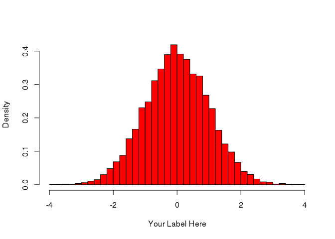

2 Methods

Figure 2.1: This is where you should write your figure description
2.1 Data Collection
2.2 Exploratory Analysis
2.3 Statistical Modeling
mod.lm <- lm(Assault ~ UrbanPop, data = USArrests)
anova(mod.lm)## Analysis of Variance Table
##
## Response: Assault
## Df Sum Sq Mean Sq F value Pr(>F)
## UrbanPop 1 22806 22805.9 3.4477 0.06948 .
## Residuals 48 317507 6614.7
## ---
## Signif. codes: 0 '***' 0.001 '**' 0.01 '*' 0.05 '.' 0.1 ' ' 1Suppose you want the last output in a Table. See Table 2.1.
| Df | Sum Sq | Mean Sq | F value | Pr(>F) | |
|---|---|---|---|---|---|
| UrbanPop | 1 | 22805.93 | 22805.933 | 3.448 | 0.069 |
| Residuals | 48 | 317507.19 | 6614.733 | NA | NA |
2.4 Reproducibility
All analyses performed in this paper can be reproduced by running the original .Rmd file with RStudio, assuming the link to the original data remains current and the contents thereof remain unchanged. The R packages car (Fox and Weisberg 2016), ggplot2 (Wickham and Chang 2016), knitr (Xie 2016b), rmarkdown (Allaire et al. 2016), and bookdown (Xie 2016a) will need to be installed on the user’s computer. Since bookdown is being actively developed and is not yet on CRAN, you will need to install bookdown from GitHub by typing the following at the R prompt:
devtools::install_github("rstudio/bookdown")